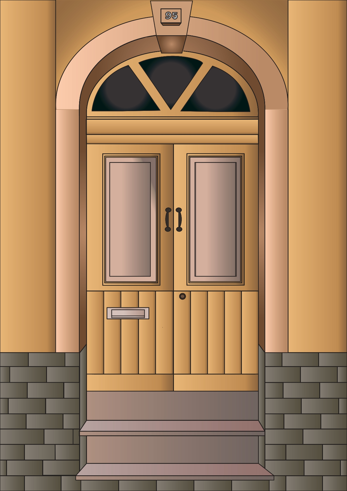

Welcome to my webpage showcasing my vector representation of a Maltese traditional door! This project was completed as part of DGA1020, where I had the opportunity to explore the rich cultural heritage of Malta.
Using Adobe Illustrator, I meticulously transformed a photograph of a door I encountered in Senglea into a vector illustration. I carefully traced and recreated the intricate details, vibrant colors, and symbolic motifs of the Maltese traditional door. Below you can see the reference photo I took and the vector that I made.
.jpeg)
Unlike traditional raster images, which are composed of pixels and can lose quality when scaled, vectors are created using mathematical equations that define shapes, lines, and colors. This means that vectors can be resized indefinitely without any loss in quality, making them ideal for various applications such as prints, posters, or even digital media. Linked below is a YouTube video explaining the difference between a raster image and a vector image.
Link to Video